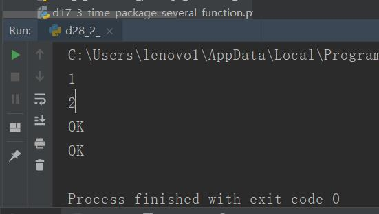

原文连接:https://www.cnblogs.com/ruigege0000/p/11703573.html
一、current中的map函数
1.map(fn,*iterable,timeout=None)
（1）跟map函数相类似（2）函数需要异步执行（3）timeout代表超时时间
（4）map和submit使用一个就可以
import time,re
import os,datetime
from concurrent import futures
data = ['1','2']
def wait_on(argument):
print(argument)
time.sleep(2)
return "OK"
ex = futures.ThreadPoolExecutor(max_workers = 2)#两个协程池
for i in ex.map(wait_on,data):#类似于正常的map函数
print(i)

二、格式化文件
1.为了解决不同设备之间的信息交换（例如：windows,linux,mac等操作系统），因此发明了xml,json格式的文件，可以在大部分平台通用
2.XML文件
（1）参考资料：
https://docs.python.org/3/library/xml.etree.elementtree.html
https://www.runoob.com/python/python-xml.html
https://blog.csdn.net/seetheworld518/article/details/49535285
（2）xml全称：eXtensiveMarkupLanguage，可扩展标记性语言
可扩展：用户可以自己定义需要的标记
标记性语言：语言中使用尖括号括起来的文本字符串标记
例如：
<Teacher>
自定义标记Teacher
在两个标记之间任何内容都应该跟Teacher相关
</Teacher>
（3）是w3c组织制定的一个标准，xml描述的是数据本身，即数据的结构和语义
（4）HTML侧重于如何显示web页面的数据，HTML中的标签是系统提前定义好的，不能自创
（5）XML文件的构成
<?xml version="1.0" encoding="ISO-8859-1"?>
<note type="online" loc="Tianjin"><!--这个尖括号是对标签的属性进行说明-->
<to>Tove</to>
<from>Jani</from>
<heading>Reminder</heading>
<body>Don't forget me this weekend!</body>
</note>
i.处理指令；
注意点：可以认为一个文件中只有一个处理指令，最多只有一行，且这一行是在文件的第一行，内容是与xml本身处理器相关的一些声明或者指令；
以xml关键字开头，在xml文件中只能出现一次并且必须是在头部，一般用于声明xml版本，version属性是必须的；encoding属性是用来指出xml解释器用的编码；
ii.根元素；
注意点：一个文件里面只有一个根元素，在整个xml文件中，可以把它看作是一个树形结构；该树形结构只有一个根
iii.子元素；
iv.属性；（元素里面的用于描述功能的东西）
v.内容；（两个尖括号之间的文本等）
vi.注释（格式:<!--注释-->）
注意点：注释不能放在元素属性那个位置；在注释内部，一个短横线是可以的，到那时如果出现两个短横线是不行的；三个短横线只能出现在开头：
我们举例下面的例子里面的注释都是不合法的
<!--注--释--> 不合法因为注释中间有了两个短横
<!---注释---> 不合法因为末尾也有了三个短横，三个短横的情况只能出现在头部
<!---注释--> 合法
<name <!--注释--> > 文本</name> 不合法，因为注释不能出现在属性的那个位置
五、源码
d28_2_mapFunctionOfCurrent.py
D29_XmlLearninf.xml
https://github.com/ruigege66/Python_learning/blob/master/d28_2_mapFunctionOfCurrent.py
https://github.com/ruigege66/Python_learning/blob/master/D29_XmlLearninf.xml
2.CSDN：https://blog.csdn.net/weixin_44630050（心悦君兮君不知-睿）
3.博客园：https://www.cnblogs.com/ruigege0000/
4.欢迎关注微信公众号：傅里叶变换，个人公众号，仅用于学习交流，后台回复”礼包“，获取大数据学习资料